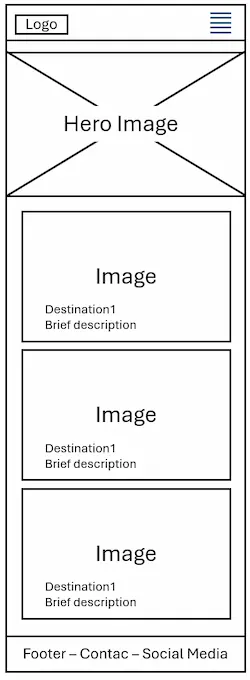
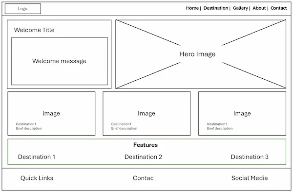

Venezuela, Land of Grace
1. Site Name
Venezuela, Land of Grace
Proposed Domain: venezuelalandofgrace.org
Alternative Domains: venezuelalandscapes.org
Why this name? When Christopher Columbus arrived on the Venezuelan coast in 1498, he was so captivated by the beauty of the landscapes that he named it "Tierra de Gracia" (Land of Grace). This name perfectly captures the divine beauty and natural splendor of Venezuela's diverse landscapes, from the world's highest waterfall to pristine Caribbean beaches, ancient tepuis, and majestic mountains. The name evokes wonder, beauty, and the spiritual connection between nature and creation.
2. Site Purpose
The website "Venezuela, Land of Grace" serves as a comprehensive resource for information and promotion of Venezuela's extraordinary natural treasures and unique landscapes. The site aims to:
- Showcase the country's stunning diversity of natural destinations unknown to many around the world
- Provide detailed descriptive profiles and high-quality images of iconic locations including:
- Angel Falls (Salto Ángel) - World's highest uninterrupted waterfall
- Gran Sabana and the Tepuis - Ancient table-top mountains
- Los Roques Archipelago - Pristine Caribbean islands
- The Andes Mountains - Venezuelan mountain range
- Orinoco Delta - Vast river delta ecosystem
- The Llanos (Plains) - Tropical grasslands
- Coro Sand Dunes - Unique desert landscape
- Educate visitors about the natural wonders God created in this singular country located in northern South America
- Inspire appreciation for Venezuela's biodiversity and natural heritage
- Provide practical travel information for eco-tourists and nature enthusiasts
3. Scenarios
Scenario 1: The Nature Photographer
Visitor Profile: Professional photographer interested in capturing Venezuela's natural landscapes
Questions:
- What are the best locations for photographing waterfalls and mountain landscapes?
- When is the best time of year to visit Angel Falls and Gran Sabana?
- What equipment should I bring for photographing the tepuis?
- Are there guided tours available for photographers?
Scenario 2: The Eco-Tourist Family
Visitor Profile: Family with teenagers planning an educational nature vacation
Questions:
- Which destinations are safe and suitable for families with children?
- What wildlife can we expect to see in the Orinoco Delta?
- Are there accommodations available near Los Roques Archipelago?
- What is the best way to travel between different natural sites?
- Can you provide information about the cultural significance of these natural sites?
Scenario 3: The Adventure Traveler
Visitor Profile: Solo traveler seeking outdoor adventures and hiking experiences
Questions:
- What are the most challenging hiking trails in the Andes?
- How difficult is it to climb Roraima Tepui?
- Where can I find contact information for local guides?
- What permits or permissions are required for certain areas?
4. Color Schema
The color palette is inspired by Venezuela's natural landscapes - lush rainforests, golden sunshine, pristine beaches, and rich earth tones.
Primary Color
#1B3A2F
Forest Green
Used for:
- Main navigation bar
- Header background
- Primary headings (h1, h2)
- Footer background
- Primary buttons
Secondary Color
#D4AF37
Golden Yellow
Used for:
- Accent elements
- Call-to-action buttons
- Links and hover states
- Highlights and icons
- Border accents
Background Color
#F5F5DC
Beige/Cream
Used for:
- Main page background
- Section backgrounds
- Card backgrounds
- Content areas
Text Color
#2C2C2C
Charcoal Gray
Used for:
- Body text/paragraphs
- Secondary headings
- List items
- Form labels
5. Typography
The typography selection balances elegance and readability, reflecting both the natural beauty and professional quality of the website.
Playfair Display
Serif - Display Font
Used for:
- Main page title (h1)
- Section headings (h2)
- Special accent text
Open Sans
Sans-Serif - Body Font
Used for:
- Body text and paragraphs
- Navigation links
- Form elements
- Captions and descriptions
Montserrat
Sans-Serif - Accent Font
Used for:
- Call-to-action buttons
- Navigation menu items
- Featured text highlights
- Card titles
Typography Specifications
| Element | Font |
|---|---|
| h1 (Main Title) | Playfair Display |
| h2 (Section Headings) | Playfair Display |
| h3 (Subheadings) | Montserrat |
| Body Text | Open Sans |
| Navigation | Montserrat |
| Buttons | Montserrat |
6. Wireframes
Mobile Views

Figure 1: Mobile wireframe - Single column layout optimized for portrait view
Larger Viewports

Figure 2: Desktop wireframe - Multi-column layout for larger screens